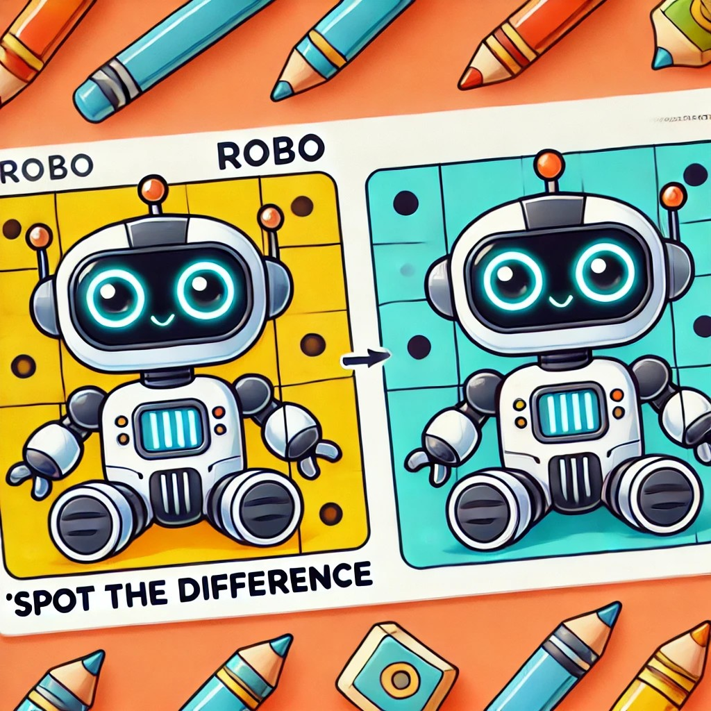

2.1. Robo, el Robot Inteligente
Inteligencia Natural vs Inteligencia Artificial
Había una vez un robot llamado Robo que quería aprender a hacer muchas cosas diferentes. Vamos a seguir su historia para entender cómo la inteligencia artificial (IA) le ayuda a ser cada vez más inteligente.

Aprendizaje automático (Machine learning)
|
Imagina que estás aprendiendo a jugar un nuevo videojuego. Al principio, puede que no seas muy bueno, pero a medida que juegas más, te vuelves mejor. Los algoritmos de aprendizaje automático son como eso para las computadoras. Les permiten aprender de sus errores y mejorar con la práctica. Escribe en tu cuaderno: |
Redes neuronales
|
Piensa en tu cerebro como una fábrica de ideas. Las redes neuronales artificiales son como pequeñas fábricas de ideas para las computadoras. Les ayudan a pensar y a aprender nuevas cosas, igual que tu cerebro te ayuda a ti a resolver problemas Escribe en tu cuaderno: |
Aprendizaje profundo (deep learning)
|
¿Sabes cómo aprendes cosas nuevas en la escuela cada día y luego las recuerdas para tu examen? Bueno, el aprendizaje profundo es como eso, ¡pero para las computadoras! Les permite aprender de grandes cantidades de información y resolver problemas complejos. Escribe en tu cuaderno: |
Reconocimiento de patrones
|  |
Jugar a 'encuentra las diferencias' en las imágenes es muy divertido, ¿verdad? El reconocimiento de patrones es como ese juego para las computadoras. Les permite encontrar similitudes y diferencias en grandes cantidades de datos. Escribe en tu cuaderno: |
Lógica difusa (fuzzy logic)
|
Decidir entre helado de chocolate o de vainilla puede ser difícil. A veces, ¡quieres los dos! La lógica difusa permite que las computadoras tomen decisiones flexibles, como elegir un poco de ambos sabores. Escribe en tu cuaderno: |
Mineria de datos
|
La minería de datos es como ser un detective, pero en lugar de buscar pistas en una escena del crimen, buscas patrones e información útil en un montón de datos. Robo usa la minería de datos para encontrar información importante entre grandes cantidades de datos. Escribe en tu cuaderno:
|
Agrupamiento (clusterimg) y clasificación
|
Imagina que tienes una computadora que analiza fotos de perros y gatos.
En resumen, el clustering organiza sin conocimiento previo, mientras que la clasificación categoriza usando aprendizaje previo. Escribe en tu cuaderno: |